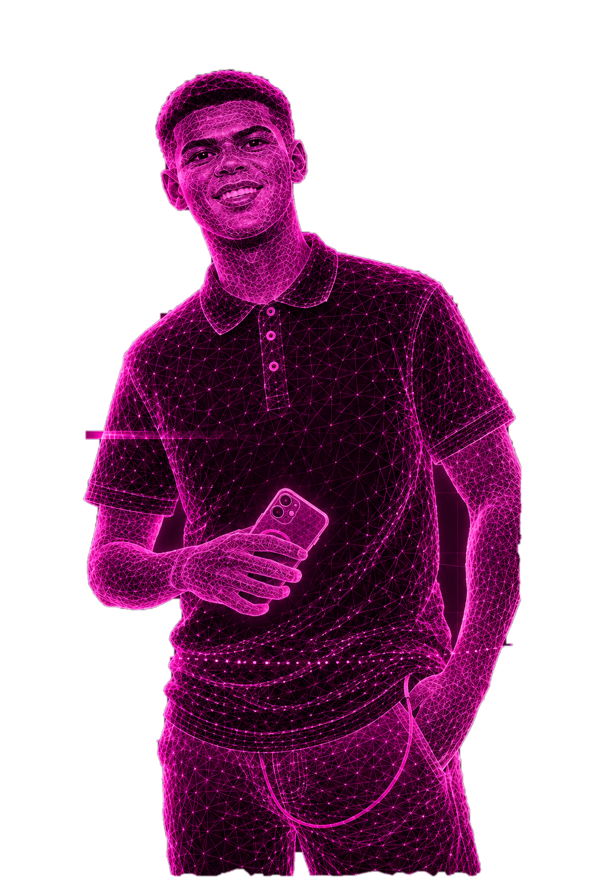
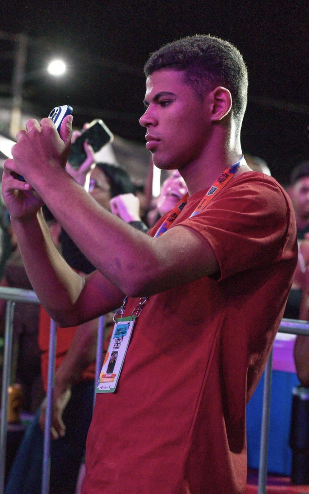

Story Maker
Captação de vídeos dinâmicos e autênticos para redes sociais.
TRANSFORMO MOMENTOS EM HISTÓRIAS
Captação, edição e conteúdo estratégico para eventos, marcas e comunicação política.
Vídeos que geram conexão e resultado.

SOBRE MIM
Sou Antonio Pablo, Story Maker especializado em captação e edição de vídeos para eventos, marcas e comunicação política. Meu trabalho é transformar momentos em conteúdo que aproxima pessoas e fortalece ideias.
📍 Inhuma — Piauí

O QUE EU FAÇO
Captação de vídeos dinâmicos e autênticos para redes sociais.
Registro de eventos, shows, congressos e momentos especiais.
Edição profissional com foco em ritmo, engajamento e resultado.
Conteúdo estratégico para comunicação e presença digital.
PORTFÓLIO
Captação ágil, narrativa e conteúdo pensado para acontecer em tempo real.
REC • STORY • REELSVAMOS CRIAR?
Fale comigo e solicite seu orçamento.
Conversar pelo WhatsApp →